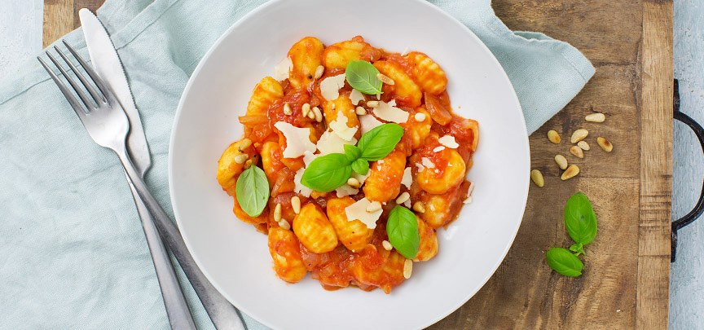

Gnocchi in tomatensaus

Ingrediënten
- 400 gr gnocchi
- 1 blik gepelde tomaten
- 1 uitje
- 2 tenen knoflook
- verse basilicum
- 2 eetlepels Parmezaanse kaas
- 1 eetlepel pijnboompitten (geroosterd)
- snuf peper en zout
- olie om te bakken
Bereiding
- Snipper de ui en knoflook fijn. Fruit aan in een pan met een beetje olie.
- Doe de gepelde tomaten erbij en laat 20 minuutjes pruttelen, druk af en toe de tomaten fijn met een spatel. Scheur wat basilicum in stukken en roer door de saus. Breng op smaak met peper en zout.
- Kook ondertussen de gnocchi beetgaar in ca. 2 a 3 minuten. Giet ze goed af en doe daarna bij de tomatensaus.
- Serveer de gnocchi napoletana met wat geraspte Parmezaanse kaas en pijnboompitten.
- Tip: lekker met een salade erbij
- Parmezaanse kaas bevat dierlijk stremsel waardoor dit recept niet 100% vegetarisch is. Vervang de kaas voor een oude of gerijpte kaas met vegetarisch stremsel of probeer eens een veganistische kaas.